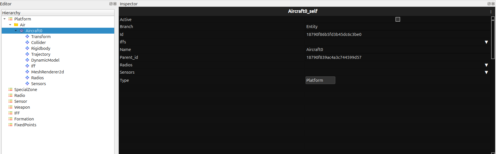
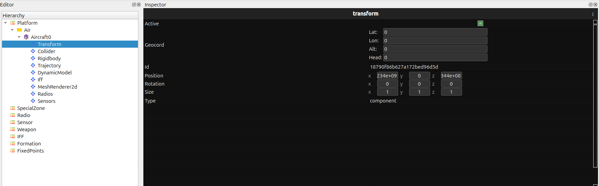
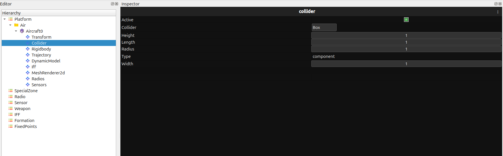
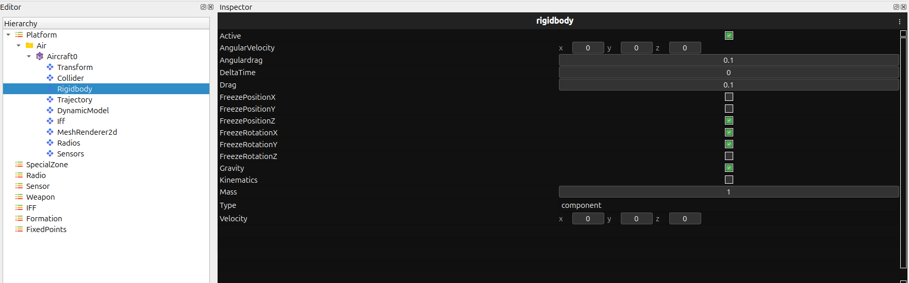
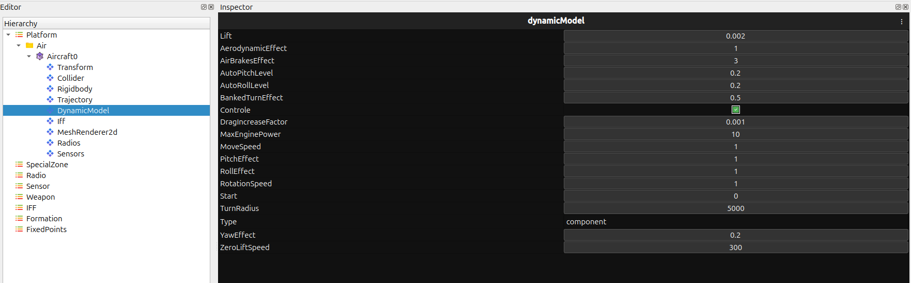
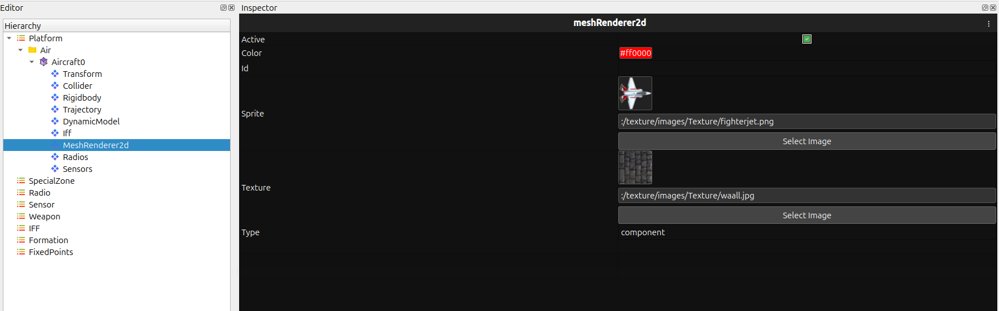
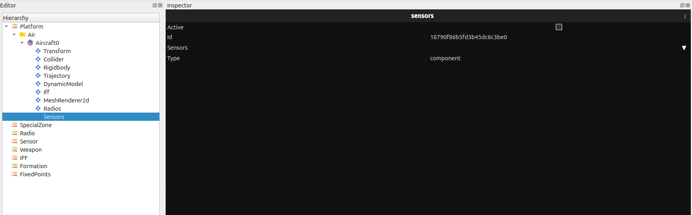
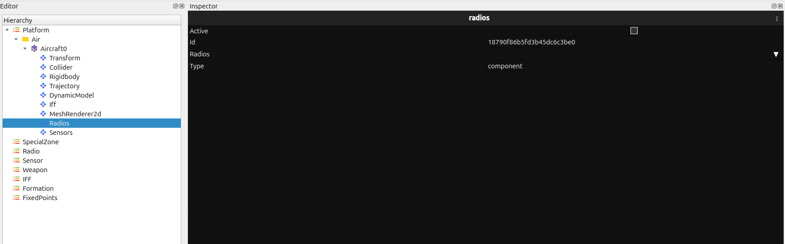
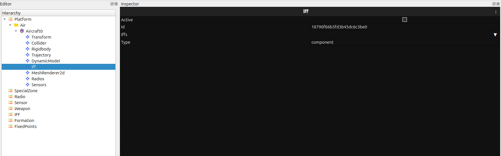
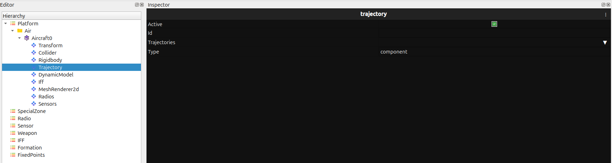

Inspector Overview
The Inspector Panel displays detailed properties and configuration values of the selected entity. When a user selects an entity from the Hierarchy Panel, all its component data—such as model properties, physics parameters, sensors, radios, IFF, trajectory, and more—is shown here.
This panel allows users to view, edit, and fine-tune every parameter associated with the entity.
{kind=link}

Aircraft0_self
Properties of the main entity instance:
Active
Branch
Id
Iffs
Name
Parent id
Radios
Sensors
Type
Transform
{kind=link}

The Transform component controls the spatial and orientation properties of the entity:
Active
Geocord - Lat - Lon - Alt - Head
Id
Position - x - y - z
Rotation - x - y - z
Size - x - y - z
Type
Collider
{kind=link}

The Collider component defines the physical collision boundaries of the entity:
Active
Collider (dropdown)
Height
Length
Radius
Type
Width
RigidBody
{kind=link}

The RigidBody component defines motion physics:
Active
AngularVelocity - x - y - z
AngularDrag
DeltaTime
Drag
FreezePositionX
FreezePositionY
FreezePositionZ
FreezeRotationX
FreezeRotationY
FreezeRotationZ
Gravity
Kinematics
Mass
Type
Velocity - x - y - z
DynamicModel
{kind=link}

The DynamicModel component defines aerodynamic and control behavior:
Lift
AerodynamicEffect
AirBrakesEffect
AutoPitchLevel
AutoRollLevel
BankedTurnEffect
Control
DragIncreaseFactor
MaxEnginePower
MoveSpeed
PitchEffect
RollEffect
RotationSpeed
StartTurnRadius
TurnRadius
Type
YawEffect
ZeroLiftSpeed
MeshRenderer2D
{kind=link}

The MeshRenderer2D component controls visual appearance:
Active
Color
Id
Sprite
Texture
Type
Sensors
{kind=link}

Active
Id
Sensors
Type
Radios
{kind=link}

Active
Id
Radios
Type
IFF
{kind=link}

Active
Id
Iffs
Type
Trajectory
{kind=link}

Active
Id
Type